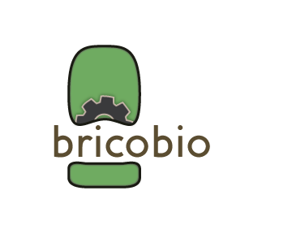

<!DOCTYPE html><html lang="en"><head></head><meta charset="utf-8"><meta http-equiv="X-UA-Compatible" content="IE=edge"><meta name="viewport" content="width=device-width, initial-scale=1.0"><meta name="description" content="Bricobio, Montreal's DIYbio community."><meta name="author" content="Bricobio"><meta name="copyright" content="2013-2014 Bricobio"><link rel="shortcut icon" href="/img/favicon.ico"><meta http-equiv="refresh" content="" ><title>Bricobio</title><link rel="stylesheet" href="css/main.css"><script src="/components/harp-bootstrap/js/tooltip.js"></script><script src="/js/jquery-2.0.3.min.js"></script><script src="/js/bootstrap.min.js"></script><!--<Just>for debugging purposes. Don't actually copy this line!</Just>--><!--[if lt IE 9]><script src="../../assets/js/ie8-responsive-file-warning.js"></script><![endif]--><!--<HTML5>shim and Respond.js IE8 support of HTML5 elements and media queries</HTML5>--><!--[if lt IE 9]><script src="https://oss.maxcdn.com/libs/html5shiv/3.7.0/html5shiv.js"></script><script src="https://oss.maxcdn.com/libs/respond.js/1.4.2/respond.min.js"></script><![endif]--></html><body><div role="navigation" class="navbar navbar-default navbar-static-top"><div class="container"><div class="navbar-header"><button type="button" data-toggle="collapse" data-target=".navbar-collapse" class="navbar-toggle collapsed"><span class="sr-only">Toggle navigation</span><span class="icon-bar"></span><span class="icon-bar"></span><span class="icon-bar"></span></button><!-- a.navbar-brand(href= en.uri, alt= en.brand)--></div></div><div class="navbar-collapse collapse"><ul class="nav navbar-nav navbar-right"><li><a href="./">About</a></li><li> <a href="./blog.html">News & Events        </a></li><li class="dropdown">       <ul class="dropdown-menu"><li> <a href="./blog.html">News & Events        </a></li><li class="active"><a href="./calendar.html">Calendar</a></li></ul><a href="#" data-toggle="dropdown" class="dropdown-toggle"><b class="caret"></b></a></li><li><a href="./education.html">Education</a></li><li><a href="./projects.html">Projects</a></li><li><a href="./forum.html">Forum</a></li><li><a href="./contact.html">Contact</a></li><li><a href="http://bricobio.org/fr/calendar.html">FR</a></li></ul></div></div><div class="container text-center"><h1>Bricobio Community Calendar<div class="row"><div class="col-sm-12"><iframe src="https://www.google.com/calendar/embed?src=l1nv8tbg54emb1p7a1uvj0kr54%40group.calendar.google.com&amp;ctz=America/Montreal" frameborder="0" scrolling="no" class="googleCalendarIframe"></iframe></div></div></h1></div><footer style="background:rgb(148,187,221);" class="bs-footer"><div class="container"><div class="row"><div class="col-md-4"><h5>Quick Links</h5><h5><i>Also find Bricobio at these online locations</i></h5><ul><li>Meetup.com (join group: link)</li><li>Github.com</li><li>Google Drive</li><li>Google Groups</li><li>Google Calendar (subscribe: ical)</li><li>Twitter (follow: link)</li><li><a href="https://plus.google.com/103806110159476051244" rel="publisher">Google+</a></li><li>Facebook</li><li>LinkedIn</li><li>Synbiota</li><li>Trello</li></ul></div><div class="col-md-4"><p>middle</p></div><div class="col-md-4"><h6>If you're in the area, check out these other DIYbio spaces!</h6><ul><li>Genspace (tw, fb, linkedin, )</li><li>La Paillaise (tw, fb, linkedin, )</li><li>BioCurious (tw, fb, linkedin, )</li><li>DIYbio Toronto (tw, fb, linkedin, )</li></ul><h6>Check out these organizations!</h6><ul><li>Sensorica</li><li>Synbiota</li><li>McGill University</li><li>Université de Montréal</li><li>Concordia University</li><li>Hyasynth Biologicals</li><li>UQAM</li><li>Genome Quebec</li></ul></div></div></div><hr/><div class="container text-center"><p>&nbsp; Bricobio, est. 2014</p><br/></div></footer><script>(function(i,s,o,g,r,a,m){i['GoogleAnalyticsObject']=r;i[r]=i[r]||function(){
(i[r].q=i[r].q||[]).push(arguments)},i[r].l=1*new Date();a=s.createElement(o),
m=s.getElementsByTagName(o)[0];a.async=1;a.src=g;m.parentNode.insertBefore(a,m)
})(window,document,'script','//www.google-analytics.com/analytics.js','ga');

ga('create', 'UA-51265317-1', 'bricobio.com');
ga('require', 'displayfeatures');
ga('send', 'pageview');</script></body>